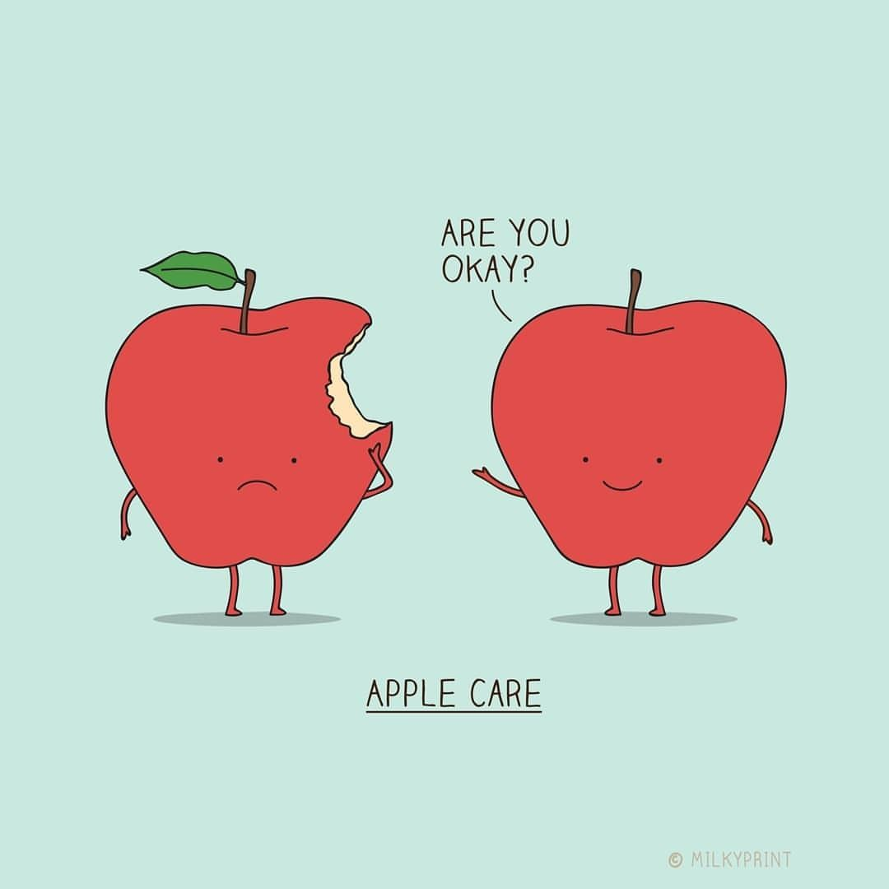

Display Panels.
Apples : Think different
References: link to image --> "www.pinterest.com %2Fpin%2F360076932708541065 %2F&psig=AOvVa w31Kkkh0rds9wpnLD_1v3- f&ust=16126776372 95000&source=images&cd=vfe&ved=0 CAIQjRxqFwoTCLDplcDK1O4CFQ AAAAAdAAAAABAD"

* * * These jokes are Apple-soluletely funny ;)) * * *
- What's worse than finding a worm in your apple?
- This joke.
- I would make a joke about Apple...
- but the punchline is sold separately
- What’s worse than finding a worm in your Apple?
- Finding 2 worms in your apple
- What’s worse than finding 2 worms in your Apple?
- Finding 1 and one half a worm in your apple
- What do you say to someone too scared to plant apples?
- Grow a pear.